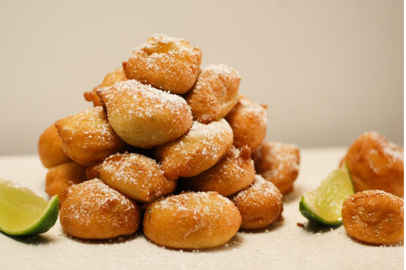

Entrées
-
Mbika (Cassava Leaves)

A traditional Congolese dish made with cassava leaves cooked in a rich sauce with palm oil, peanuts, and spices.
Price: [$ 9.5]
-
Ntaba (Grilled Goat)
Tender pieces of goat marinated in aromatic spices and grilled to perfection, served with plantains.
Price: [$ 15.3]
Plats Principaux
-
Mafé (Peanut Stew)
Mafé is a dish particularly consumed in West Africa.
Of Malian origin, mafé or tiga dèguè na is undoubtedly one of the most famous traditional preparations on the African continent. This is a sauce made from long-simmered peanut paste.
Mafé is also very present in the cuisine of Senegal, Gambia, Mauritania and Burkina Faso where it designates the dish itself. The latter, made from beef, chicken, lamb or fish cooked in a peanut paste and tomato sauce, is generally accompanied by rice or vegetables.
Price: [$ 13.3]
-
Fufu and Eru

Fufu, a staple made from cassava, plantains, or yams, served with Eru, a flavorful soup made with wild spinach and palm oil.
Price: [$ 25.3]
Desserts
-
Banana Fritters
Golden and crispy banana fritters served with a dusting of powdered sugar, a delightful Congolese dessert.
Price: [$ 4.3]
-
Peanut Bread

Moist and flavorful bread made with ground peanuts, a unique dessert that captures the essence of Congolese flavors.
Price: [$ 2.3